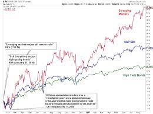
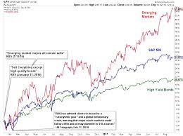
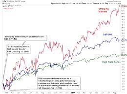

steps for tha bread. need a computuer get you sum stacks. THEN GO OFF.
Read morefollow thsese steps if you really want to get the bread or invest. 1.Decide how you want to invest in the stock market. 2.Choose an investing account. 3.Learn the difference between investing in stocks and funds. 4.Set a budget for your stock market investment. 5.Focus on investing for the long-term. 6.Manage your stock portfolio.
Read more'Making money is a knack, a knack that can be acquired. And if someone like me can become rich, then so can you - no matter what your present circumstances. Here is how I did it and what I learned along the way.' So writes Felix Dennis, who believes that almost anyone of reasonable intelligence can become rich, given sufficient motivation and application. "How To Get Rich" is a distillation of his business wisdom. Primarily concerned with the step-by-step creation of wealth, it ruthlessly dissects the business failures and financial triumphs of 'a South London lad who became rich virtually by accident'. Part manual, part memoir, part primer, this book is a template for those who are willing to stare down failure and transform their lives. Canny, infuriating, cynical and generous by turns, "How To Get Rich" is an invaluable guide to 'the surprisingly simple art of collecting money which already has your name on it.' By flix dennis.
